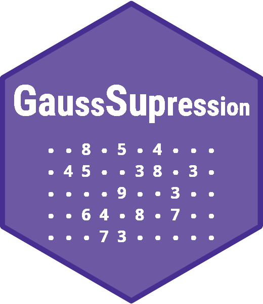

Construct primary suppressed difference matrix
Source:R/SuppressKDisclosure.R
KDisclosurePrimary.RdFunction for constructing model matrix columns representing primary suppressed difference cells
Usage
KDisclosurePrimary(
data,
x,
crossTable,
freqVar,
mc_hierarchies = NULL,
coalition = 1,
upper_bound = Inf,
targeting = default_targeting,
print_frames = FALSE,
...
)Arguments
- data
a data.frame representing the data set
- x
ModelMatrix generated by parent function
- crossTable
crossTable generated by parent function
- freqVar
name of the frequency variable in
data- mc_hierarchies
a hierarchy representing meaningful combinations to be protected. Default value is
NULL.- coalition
numeric vector of length one, representing possible size of an attacking coalition. This parameter corresponds to the parameter k in the definition of k-disclosure.
- upper_bound
Numeric value specifying the maximum cell frequency for which disclosure of belonging to the cell may be regarded as unacceptable. When freq > upper_bound, disclosure of belonging to the cell is regarded as acceptable regardless of the specification of the
sensitiveparameter. Default is Inf. Note that this parameter may also be useful for reducing computational burden.- targeting
NULL, a list, or a function that returns a list specifying attribute disclosure scenarios. See Details. Default is default_targeting.
- print_frames
Logical or character. If TRUE, additional data frames are printed to the console. When
mc_hierarchiesis used, this includes a data frame with hidden results. In addition, a data frame containing the primary suppressed difference cells is printed. If set to"primary_cells", only the primary suppressed difference cells are printed. The default is FALSE.- ...
parameters passed to children functions
Details
The targeting specification is a named list that may contain the following
optional elements. References to crossTable below refer to a data frame
that may be extended after applying mc_hierarchies.
identifyingA data frame containing selected rows from
crossTable. Membership in the cells represented by these rows is regarded as information that an intruder may already know. If omitted, it defaults tocrossTable.sensitiveA data frame containing selected rows from
crossTable. If an intruder can infer membership in the cells represented by these rows, this is considered an unacceptable disclosure, subject to any further specification provided byis_sensitive. If omitted, it defaults tocrossTable.is_sensitiveA data frame with the same structure as
sensitive, but with logical variables. It indicates which codes insensitiveare regarded as sensitive. When specified, disclosure is assessed by which codes within a revealed cell are disclosed. If omitted, it is equivalent to a data frame where all elements areTRUE.exclude_relationsA specification defining identifying–sensitive relations that are ignored. This may be given either as a sparse logical matrix (or a dummy matrix with values 0/1), or as a list of lists. In the matrix form, rows correspond to rows in
sensitive(orcrossTableifsensitiveis not specified), and columns correspond to rows inidentifying(orcrossTableifidentifyingis not specified). In the list form, each list element specifies a set of relations by selecting rows fromidentifyingand/orsensitivedefined above. Each element may contain the componentsidentifyingandsensitive; omitted components default to all rows of the corresponding element. The full list jointly defines the relations to be excluded.include_relationsAs for
exclude_relations, but defining the identifying–sensitive relations that are considered. Only the relations specified are included; all others are ignored.